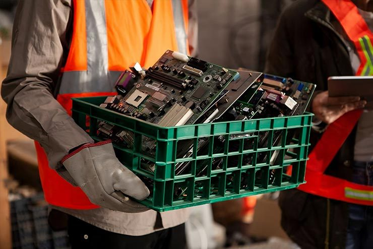
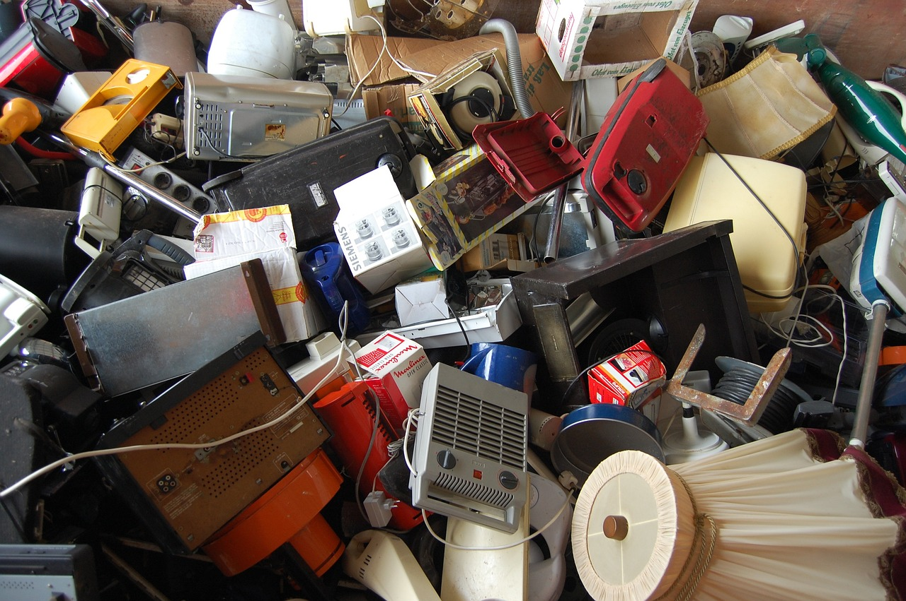
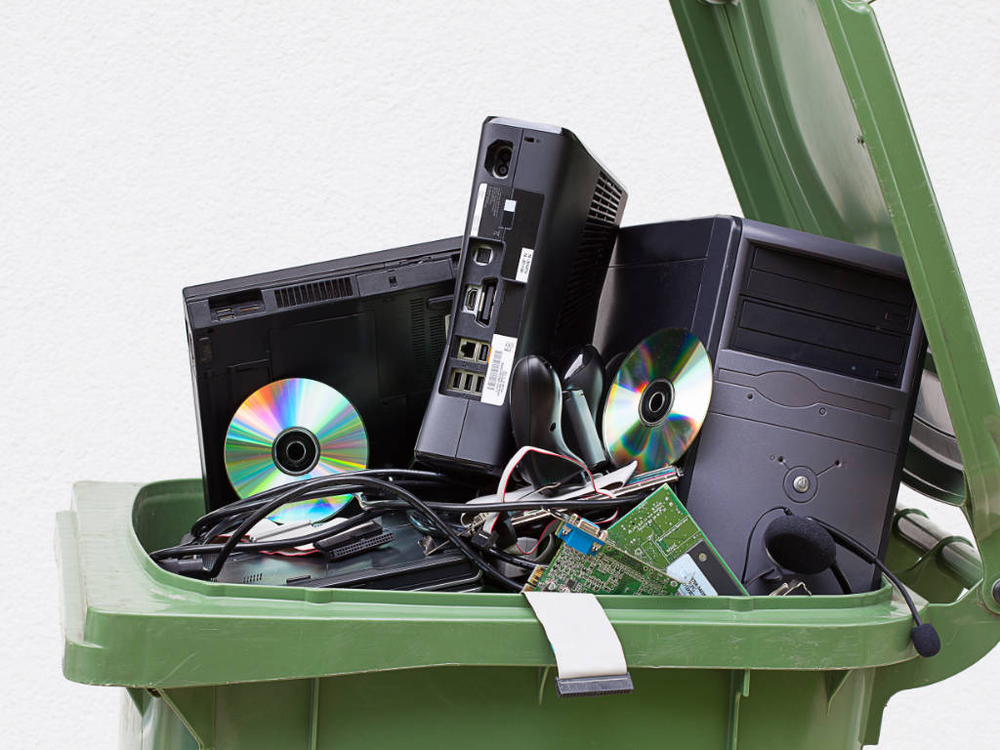

Como o Descarte Correto de Eletrônicos Ajuda o Meio Ambiente
Entenda os impactos positivos de descartar seus eletrônicos de maneira responsável...
Leia Mais

Lixo Eletrônico: 62 Milhões de Toneladas em 2022
Veja como pode ser simples e eficiente organizar o descarte de aparelhos antigos...
Leia Mais

O Impacto do Lixo Eletrônico na Saúde Pública
Saiba como o lixo eletrônico pode afetar nossa saúde e como podemos mitigar esses riscos...
Leia Mais